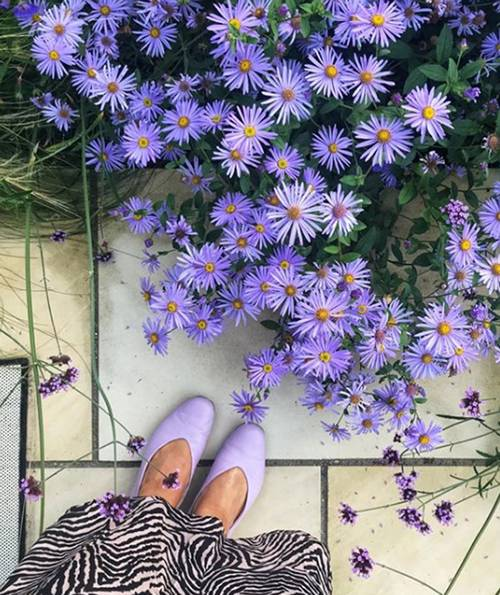
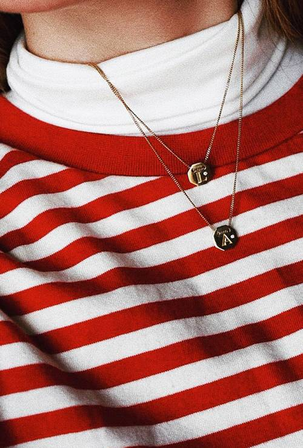
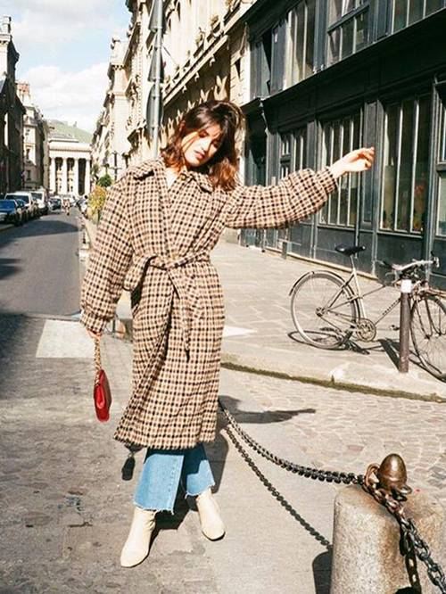

M&S's Sellout £35
Marks and Spencer is one of our favourite places to shop for long-lasting wardrobe staples and has a strong track record of every day turning basics into cult items, whether it's a grey jumper or a beige wrap coat.
Erica Davies is one of our favourite influencers to follow for a high-street edit, as she consistently finds pieces that defy their price tag, and today she introduced her followers to the most amazing pair of M&S Collection pumps.
These £35 pumps have a high cut and a gentle V towards the toe, which make them appear more elevated that the classic almond toe. There's something a little Phoebe Philo about this silhouette, no? Erica owns them in tan, lemon, lilac and black.

How to Dress for the Cold
Getting dressed in winter can very quickly become tiring thanks to a lack of variety of outerwear (most of us reach for the same coat every single day) and the need for hundreds of layers. Before the weather really turns, we've found some winter styling tricks to make getting dressed a little more fun.
From clever layering ideas that won't make you feel like Joey Tribiani from Friends (remember that the episode where he puts on all of his clothes at once?) to the best way to cover your legs if you hate wearing tights, these eight winter outfit ideas are bound to leave you feeling inspired for the winter wardrobe switchover.

6 Winter trends we love
While we know it’s not ideal to play into clichés, there is just something about the way Parisian women dress that has us constantly looking to them for inspiration. There’s a certain je ne sais quoi that can’t exactly be explained but often results in looks that are chic and put-together yet somehow manage to come across as completely effortless. Yes, it may be a stereotype, but it’s a stereotype for a reason.
As to be expected, this winter we’re looking to our favourite French women to figure out exactly how they tackle the colder months. In an effort to emulate their looks, we’re studying the elements of their outfit formulas to see exactly which pieces they throw together and why.